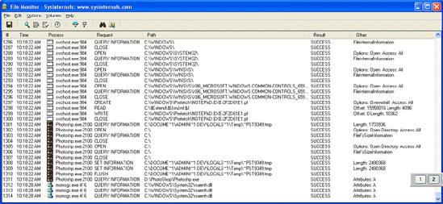

FileMon monitors and displays file system activity on a system in real-time. Its advanced capabilities make it a powerful tool for exploring the way Windows works, seeing how applications use the files and DLLs, or tracking down problems in system or application file configurations. Filemon's timestamping feature will show you precisely when every open, read, write or delete, happens, and its status column tells you the outcome. FileMon is so easy to use that you'll be an expert within minutes. It begins monitoring when you start it, and its output window can be saved to a file for off-line viewing. It has full search capability, and if you find that you're getting information overload, simply set up one or more filters.
FileMon works on NT 4.0, Windows 2000, Windows XP, Windows XP and Windows Server 2003 64-bit Edition, Windows 2003 Server, Windows 95, Windows 98 and Windows ME.
If you have questions or problems please visit the Sysinternals Filemon Forum.
Simply run FileMon (filemon.exe). You must have administrator privilege to run FileMon. When FileMon is started for the first time it will monitor all local hard drives. Menus, hot-keys, or toolbar buttons can be used to clear the window, select and deselect monitored volumes including network volumes (Windows NT/2K/XP), save the monitored data to a file, and to filter and search output.
If you've specified filters then FileMon will ask you to confirm filters used from the last session each time you start it. To start FileMon without it prompting you specify the /q switch on the command line. When FileMon starts it automatically captures file system activity. To start it with capture disabled use the /o switch on the command-line.
As events are printed to the output, they are tagged with a sequence number. If Filemon's internal buffers are overflowed during extremely heavy activity, this will be reflected with gaps in the sequence number.
Each time you exit FileMon it remembers the filters you've configured, position of the window and the widths of the output columns.
Use the Filter dialog, which is accessed with a toolbar button or the Edit|Filter/Highlight menu selection, to select what data will be shown in the list view. The '*' wildcard matches arbitrary strings, and the filters are case-insensitive. Only matches shown in the include filter, but that are not excluded with the exclude filter, are displayed. Use ';' to separate multiple strings in a filter (e.g. "filemon;temp"). Windows NT/2000 note: because of the asynchronous nature of file I/O, its not possible to filter on the result field.
For example, if the include filter is "c:\temp", and the exclude filter is "c:\temp\subdir", all references to files and directories under c:\temp, except to those under c:\temp\subdir will be monitored.
Wildcards allow for complex pattern matching, making it possible to match specific file accesses by specific applications, for example. The include filter "Winword*Windows" would have FileMon only show accesses by Microsoft Word to files and directories that include the word "Windows".
Use the highlight filter specify output that you want to have highlighted in the listview output. Select highlighting colors with Edit|Highlight Colors.
Additional filter options select or deselect read, write or open operations. In many troubleshooting scenarios only open operations are of interest, for example.
The Volumes menu can be used to select and deselect monitored volumes. Select the Network menu item to monitor accesses to any network resources, including remote shares and UNC path name accesses to remote volumes.
The History Depth dialog, accessed via toolbar button or the Edit|History menu item, allows you to specify the maximum number of lines that will be remembered in the output window. A depth of 0 is used to signify no limit.
You can search the output window for strings using the Find menu item (or the find toolbar button). You can repeat the search in the forward direction with the F3 key and in reverse with Shift+F3. To start a search at a particular line in the output, select the desired line by clicking on the far left column (the index number). If no line is selected a new search starts at the first entry in searching down, and at the last entry for searching up.
FileMon can either timestamp events or show their duration. The Options menu and the clock toolbar button let you toggle between the two modes. The button on the toolbar shows the current mode with a clock or a stopwatch. When showing duration the Time field in the output shows the number of seconds it took for the underlying file system to service particular requests. The Options|Show Milliseconds menu entry lets you add millisecond resolution to times presented when FileMon shows clock times.
You can toggle FileMon to always remain a top window with the Options|Always On Top menu item. In addition, you can toggle FileMon not to scroll the listview via the Options|Auto Scroll menu item or corresponding toolbar button.
Starting in version 4.1 FileMon is able to monitor named pipe and mail slot file system activity on Windows NT/2K. Named pipes are commonly used as a communications mechanism in NT/Win2K by core subsystems like the Local Security Authority Subsystem (LSASS), and are used by DCOM. They are also used by network components such as the Browser service. To see named pipe activity with FileMon select Named Pipes in the Drives menu and perform an operation on a shared network resource, or open an application such as Regedt32 that interacts with the security subsystem.
For the Windows 9x driver, the heart of FileMon is in the virtual device driver, Filevxd.vxd. It is dynamically loaded, and in its initialization it installs a file system filter via the VxD service, IFSMGR_InstallFileSystemApiHook, to insert itself onto the call chain of all file system requests. On Windows NT the heart of FileMon is a file system driver that creates and attaches filter device objects to target file system device objects so that FileMon will see all IRPs and FastIO requests directed at drives. When FileMon sees an open, create or close call, it updates an internal hash table that serves as the mapping between internal file handles and file path names. Whenever it sees calls that are handle based, it looks up the handle in the hash table to obtain the full name for display. If a handle-based access references a file opened before FileMon started, FileMon will fail to find the mapping in its hash table and will simply present the handle's value instead.
Information on accesses is dumped into an ASCII buffer that is periodically copied up to the GUI for it to print in its listbox.
Here are some other monitoring tools available at Sysinternals:
The following serve as additional sources of information on the Windows 9x file system:
These are sources of information on the Windows NT/2000 file system and/or FileMon:
These KB article reference Filemon to help diagnose or troubleshoot various problems:
Filemon Enterprise Edition, the commercial version of FileMon, extends the functionality of FileMon with s everal powerful features, including the ability to monitor remote systems and save output to a log file as the output generates. It is available as part of Winternals Adminstrator's Pak.
In order to help us track its use, please download through the link that represents the operating system on which you will use or mostly use Filemon. Note that the 32-bit zip files (the first two) are identical, and works on either Win9x or NT as well as 64-bit (x64) Windows XP and Server 2003.
Download Filemon (x86 - 197 KB) - you plan on using Filemon on Win9x
Download Filemon (x86 - 197 KB) - you plan on using Filemon on 32-bit versions of NT/2K/XP/Server 2003
Download Filemon (x64 - 197 KB) - you plan on using Filemon on 64-bit XP/Server 2003